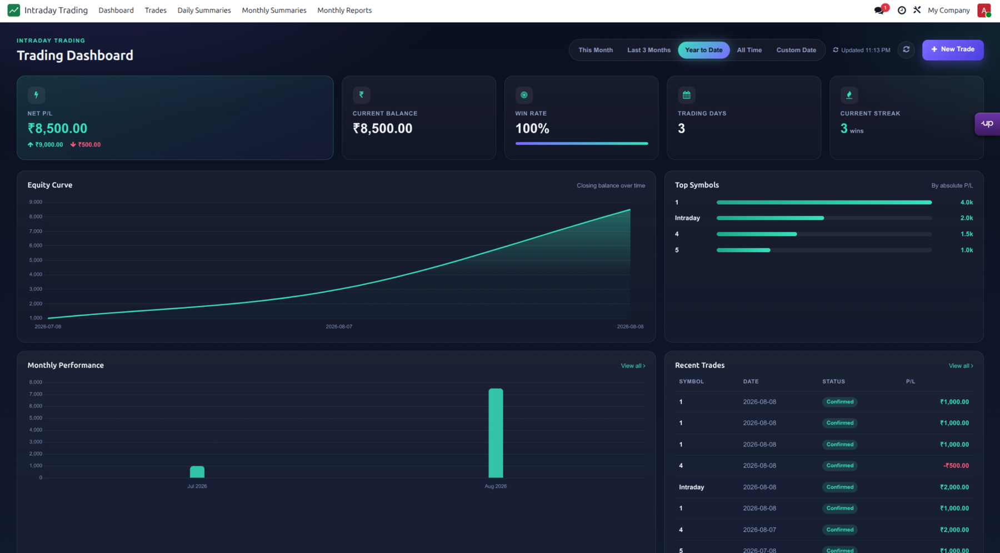
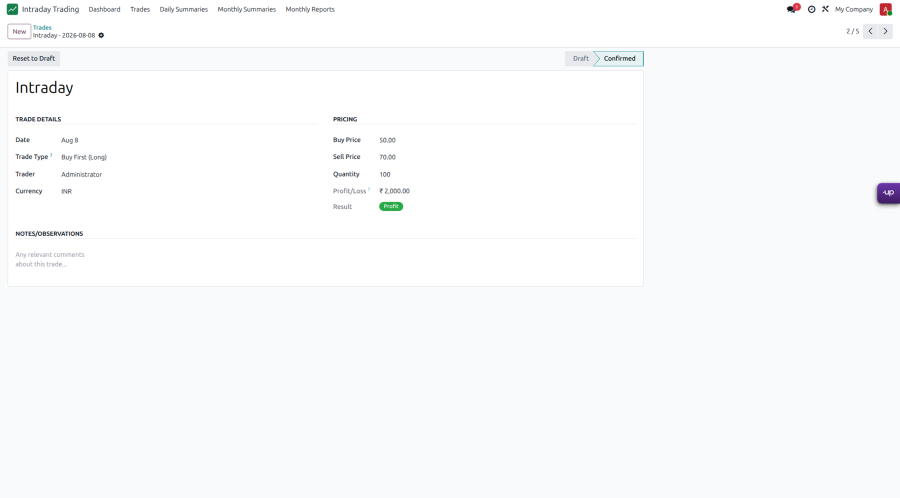
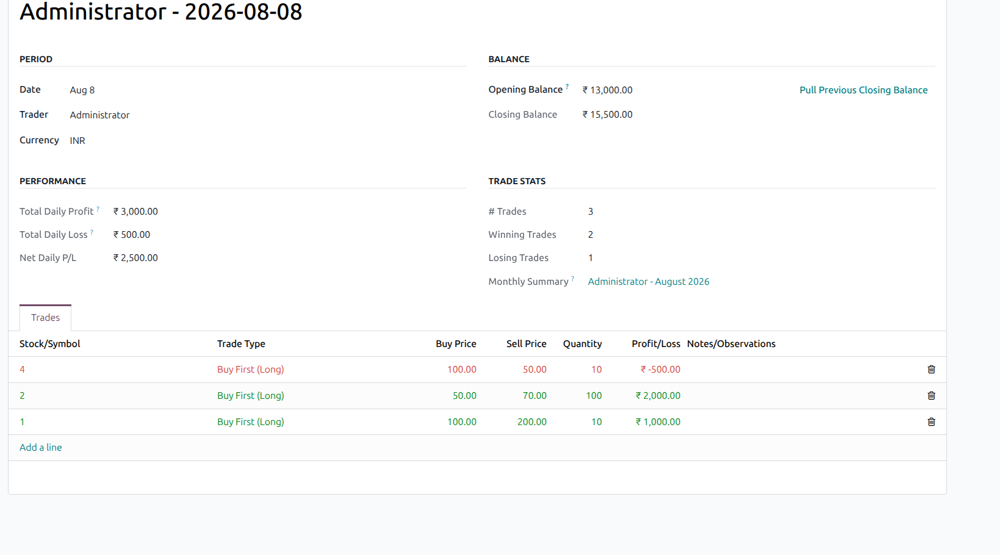
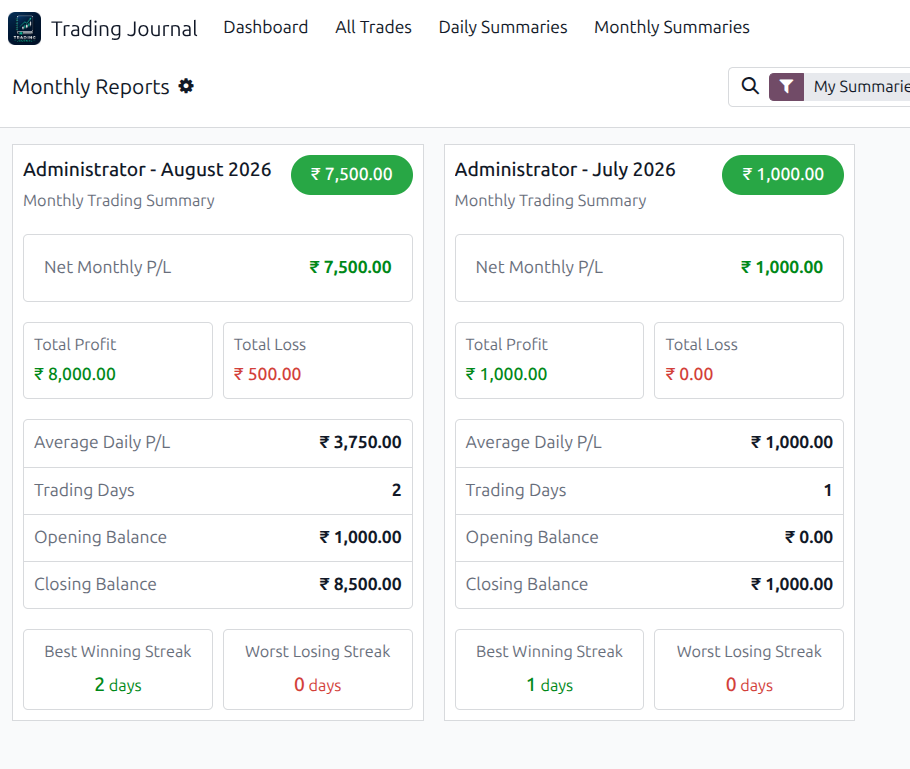
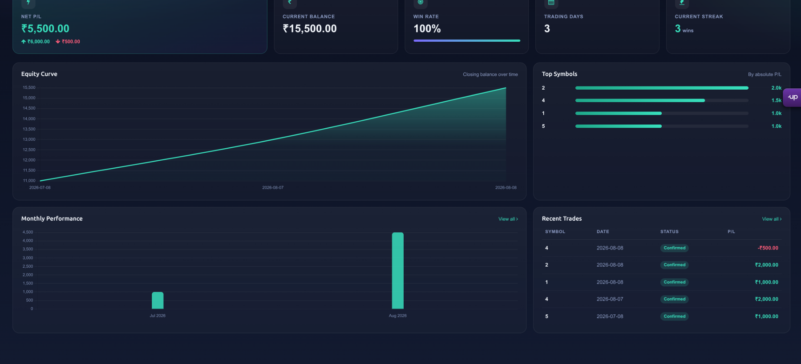

<div style="background:#0b1020;color:#e9eefc;font-family:Arial,Helvetica,sans-serif;line-height:1.6;">
  <div style="max-width:1180px;margin:0 auto;padding:55px 28px 70px;">

    <!-- HERO -->
    <div style="text-align:center;padding:20px 0 48px;">
      
      <div style="margin-top:22px;font-size:13px;letter-spacing:2px;text-transform:uppercase;color:#43dbc4;font-weight:700;">Odoo 19 • Trading Management</div>
      <h1 style="font-size:46px;line-height:1.12;margin:10px 0 18px;color:#fff;font-weight:800;">Trading Journal</h1>
      <p style="max-width:820px;margin:0 auto;color:#aeb9d4;font-size:19px;">
        Record trades, track balances, understand daily and monthly performance,
        and monitor your trading journey from one clean Odoo dashboard.
      </p>
      <div style="margin-top:26px;">
        <span style="display:inline-block;background:#171f38;border:1px solid #2d3958;border-radius:999px;padding:8px 16px;margin:4px;color:#dbe5ff;">Odoo 19</span>
        <span style="display:inline-block;background:#171f38;border:1px solid #2d3958;border-radius:999px;padding:8px 16px;margin:4px;color:#dbe5ff;">€39</span>
        <span style="display:inline-block;background:#171f38;border:1px solid #2d3958;border-radius:999px;padding:8px 16px;margin:4px;color:#dbe5ff;">No External API</span>
      </div>
    </div>

    <!-- HERO SCREENSHOT -->
    <div style="background:#131a2d;border:1px solid #293553;border-radius:18px;padding:10px;box-shadow:0 22px 60px rgba(0,0,0,.35);">
      
    </div>

    <!-- VALUE -->
    <div style="padding:62px 0 20px;text-align:center;">
      <div style="font-size:13px;letter-spacing:1.5px;text-transform:uppercase;color:#43dbc4;font-weight:700;">Built for disciplined record keeping</div>
      <h2 style="font-size:32px;color:#fff;margin:8px 0 12px;">Turn individual trades into useful performance data</h2>
      <p style="max-width:800px;margin:0 auto;color:#aeb9d4;font-size:17px;">
        Keep trade-level details and performance summaries connected. The journal
        calculates results and gives you a visual view of how your trading activity
        changes over time.
      </p>
    </div>

    <!-- FEATURES -->
    <div style="display:flex;flex-wrap:wrap;margin:35px -8px 10px;">
      <div style="width:50%;box-sizing:border-box;padding:8px;">
        <div style="height:100%;box-sizing:border-box;background:#131a2d;border:1px solid #293553;border-radius:14px;padding:25px;">
          <div style="font-size:24px;color:#43dbc4;">01</div>
          <h3 style="color:#fff;margin:8px 0;">Trade Journal</h3>
          <p style="color:#aeb9d4;margin:0;">Record long and short trades with date, trader, currency, buy price, sell price, quantity, notes and calculated Profit/Loss.</p>
        </div>
      </div>
      <div style="width:50%;box-sizing:border-box;padding:8px;">
        <div style="height:100%;box-sizing:border-box;background:#131a2d;border:1px solid #293553;border-radius:14px;padding:25px;">
          <div style="font-size:24px;color:#43dbc4;">02</div>
          <h3 style="color:#fff;margin:8px 0;">Automatic Performance Tracking</h3>
          <p style="color:#aeb9d4;margin:0;">Connect trading activity with daily and monthly summaries so you can see profit, loss, balances and trade statistics without maintaining separate spreadsheets.</p>
        </div>
      </div>
      <div style="width:50%;box-sizing:border-box;padding:8px;">
        <div style="height:100%;box-sizing:border-box;background:#131a2d;border:1px solid #293553;border-radius:14px;padding:25px;">
          <div style="font-size:24px;color:#43dbc4;">03</div>
          <h3 style="color:#fff;margin:8px 0;">Interactive Dashboard</h3>
          <p style="color:#aeb9d4;margin:0;">Monitor Net P/L, current balance, win rate, trading days, streaks, equity curve, top symbols, monthly performance and recent trades.</p>
        </div>
      </div>
      <div style="width:50%;box-sizing:border-box;padding:8px;">
        <div style="height:100%;box-sizing:border-box;background:#131a2d;border:1px solid #293553;border-radius:14px;padding:25px;">
          <div style="font-size:24px;color:#43dbc4;">04</div>
          <h3 style="color:#fff;margin:8px 0;">Flexible Date Analysis</h3>
          <p style="color:#aeb9d4;margin:0;">Switch between This Month, Last 3 Months, Year to Date, All Time and Custom Date to focus on the period that matters.</p>
        </div>
      </div>
      <div style="width:50%;box-sizing:border-box;padding:8px;">
        <div style="height:100%;box-sizing:border-box;background:#131a2d;border:1px solid #293553;border-radius:14px;padding:25px;">
          <div style="font-size:24px;color:#43dbc4;">05</div>
          <h3 style="color:#fff;margin:8px 0;">Daily &amp; Monthly Summaries</h3>
          <p style="color:#aeb9d4;margin:0;">Review opening and closing balances, daily P/L, winning and losing trades, trading days and monthly performance metrics.</p>
        </div>
      </div>
      <div style="width:50%;box-sizing:border-box;padding:8px;">
        <div style="height:100%;box-sizing:border-box;background:#131a2d;border:1px solid #293553;border-radius:14px;padding:25px;">
          <div style="font-size:24px;color:#43dbc4;">06</div>
          <h3 style="color:#fff;margin:8px 0;">Trader-Level Security</h3>
          <p style="color:#aeb9d4;margin:0;">Use trader and Trading Supervisor access levels with record rules designed to keep trader data separated where required.</p>
        </div>
      </div>
    </div>

    <!-- SCREENSHOTS -->
    <div style="padding-top:55px;">
      <div style="text-align:center;margin-bottom:24px;">
        <div style="font-size:13px;letter-spacing:1.5px;text-transform:uppercase;color:#43dbc4;font-weight:700;">Product screens</div>
        <h2 style="font-size:32px;color:#fff;margin:8px 0;">Everything stays inside Odoo</h2>
      </div>

      <div style="background:#131a2d;border:1px solid #293553;border-radius:18px;padding:10px;margin:20px 0;">
        
        <div style="padding:18px 14px 10px;">
          <h3 style="color:#fff;margin:0 0 5px;">Simple trade entry</h3>
          <p style="color:#aeb9d4;margin:0;">Capture the essential information for each trade and keep notes alongside the financial result.</p>
        </div>
      </div>

      <div style="background:#131a2d;border:1px solid #293553;border-radius:18px;padding:10px;margin:20px 0;">
        
        <div style="padding:18px 14px 10px;">
          <h3 style="color:#fff;margin:0 0 5px;">Daily summary</h3>
          <p style="color:#aeb9d4;margin:0;">See opening balance, closing balance, daily profit/loss, trade count and winning/losing trades in one record.</p>
        </div>
      </div>
      <div style="background:#131a2d;border:1px solid #293553;border-radius:18px;padding:10px;margin:20px 0;">
        
        <div style="padding:18px 14px 10px;">
          <h3 style="color:#fff;margin:0 0 5px;">Monthly summaries</h3>
          <p style="color:#aeb9d4;margin:0;">See opening and closing balances, monthly profit/loss, trade count and winning/losing trades in one record.</p>
        </div>
      </div>

      <div style="background:#131a2d;border:1px solid #293553;border-radius:18px;padding:10px;margin:20px 0;">
        
        <div style="padding:18px 14px 10px;">
          <h3 style="color:#fff;margin:0 0 5px;">Performance at a glance</h3>
          <p style="color:#aeb9d4;margin:0;">Use visual metrics and charts to review the direction of your trading performance over selected periods.</p>
        </div>
      </div>
    </div>

    <!-- WORKFLOW -->
    <div style="padding-top:45px;">
      <div style="background:#11182b;border:1px solid #293553;border-radius:18px;padding:32px;">
        <div style="font-size:13px;letter-spacing:1.5px;text-transform:uppercase;color:#43dbc4;font-weight:700;">Workflow</div>
        <h2 style="font-size:30px;color:#fff;margin:7px 0 20px;">From trade entry to performance review</h2>
        <div style="display:flex;flex-wrap:wrap;">
          <div style="width:20%;min-width:180px;padding:10px;box-sizing:border-box;"><strong style="color:#fff;">1. Record</strong><p style="color:#aeb9d4;">Enter your trade details.</p></div>
          <div style="width:20%;min-width:180px;padding:10px;box-sizing:border-box;"><strong style="color:#fff;">2. Calculate</strong><p style="color:#aeb9d4;">Review the calculated P/L.</p></div>
          <div style="width:20%;min-width:180px;padding:10px;box-sizing:border-box;"><strong style="color:#fff;">3. Summarize</strong><p style="color:#aeb9d4;">Track daily results.</p></div>
          <div style="width:20%;min-width:180px;padding:10px;box-sizing:border-box;"><strong style="color:#fff;">4. Aggregate</strong><p style="color:#aeb9d4;">Review monthly performance.</p></div>
          <div style="width:20%;min-width:180px;padding:10px;box-sizing:border-box;"><strong style="color:#fff;">5. Analyze</strong><p style="color:#aeb9d4;">Use the dashboard.</p></div>
        </div>
      </div>
    </div>

    <!-- WHAT YOU GET -->
    <div style="padding-top:40px;">
      <div style="display:flex;flex-wrap:wrap;">
        <div style="width:50%;box-sizing:border-box;padding:8px;">
          <div style="background:#131a2d;border:1px solid #293553;border-radius:14px;padding:26px;height:100%;box-sizing:border-box;">
            <h3 style="color:#fff;margin-top:0;">Included</h3>
            <ul style="color:#aeb9d4;padding-left:20px;">
              <li>Odoo 19 compatible module</li>
              <li>Trade management</li>
              <li>Daily summaries</li>
              <li>Monthly summaries</li>
              <li>Interactive dashboard</li>
              <li>Custom date filtering</li>
              <li>Trader/Supervisor security</li>
              <li>Standard Odoo backend integration</li>
            </ul>
          </div>
        </div>
        <div style="width:50%;box-sizing:border-box;padding:8px;">
          <div style="background:#131a2d;border:1px solid #293553;border-radius:14px;padding:26px;height:100%;box-sizing:border-box;">
            <h3 style="color:#fff;margin-top:0;">Requirements</h3>
            <ul style="color:#aeb9d4;padding-left:20px;">
              <li>Odoo 19.0</li>
              <li>Dependencies: base, mail, web</li>
              <li>No broker account required</li>
              <li>No external API required</li>
              <li>Trading data is stored in the customer's Odoo database</li>
            </ul>
          </div>
        </div>
      </div>
    </div>

    <!-- DISCLAIMER -->
    <div style="margin-top:35px;background:#171b2a;border:1px solid #343b54;border-radius:14px;padding:22px 26px;">
      <h3 style="color:#fff;margin-top:0;">Important</h3>
      <p style="color:#aeb9d4;margin-bottom:0;">
        Trading Journal is a record-keeping and performance-tracking application.
        It does not execute trades, connect to a broker, generate trading signals, or provide
        investment or financial advice. Users are responsible for their own trading decisions.
      </p>
    </div>

    <div style="text-align:center;padding:45px 0 5px;color:#71809f;">
      <strong style="color:#dbe5ff;">Trading Journal for Odoo 19</strong><br/>
      Record. Review. Understand your trading performance.
    </div>
  </div>
</div>
